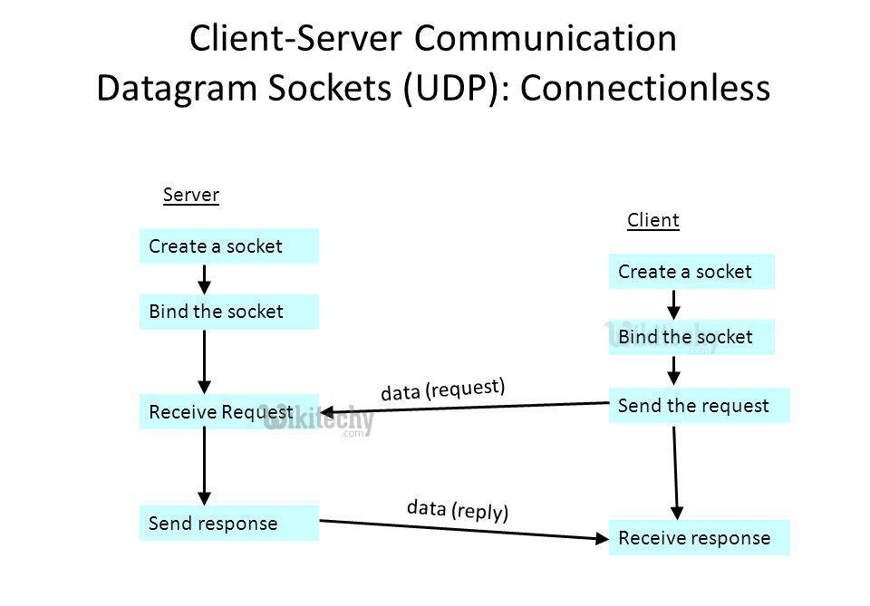

Scopri il mondo dei Socket
Vai alla pagina Socket
Comprendi HTTP e HTTPS
Vai alla pagina HTTP/HTTPS
Questo sito è dedicato a spiegare i concetti fondamentali relativi ai Socket, ai protocolli HTTP/HTTPS, e al modello di rete ISO/OSI. Attraverso questa piattaforma, potrai comprendere meglio come funziona la comunicazione tra dispositivi e i concetti essenziali delle reti.